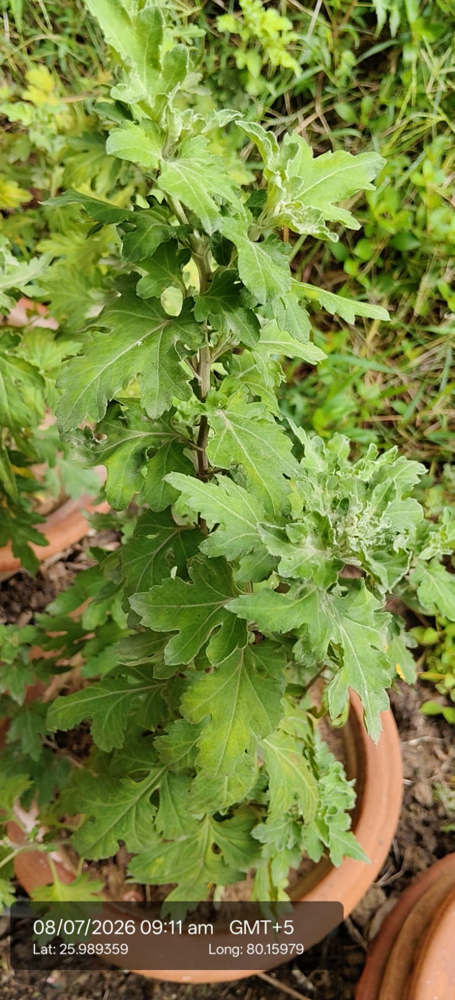

Also known as: Chrysanthemum / Guldaudi / Shevanti

Scientific name
Chrysanthemum morifolium
Family
Asteraceae
Category
Herbs
Habitat & Growing Conditions
Native to East Asia. Widely cultivated across India
Very common in UP including Kanpur area at your coordinates. Grown in home gardens, pots, and nurseries like in your photo
Thrives in cool to subtropical climate. Grows best in winter season in North India
Needs well-drained soil and full sun to partial shade
Bushy herb, 0.3-1.5 m tall. Leaves are alternate, lobed, deeply cut with serrated margins, slightly hairy and aromatic when crushed. This leaf shape matches your photo
Economic Importance
Ornamental: One of the most important commercial flower crops of India. Used for garlands, decoration, bouquets, and religious offerings. Blooms in winter with flowers in white, yellow, red, pink, orange
Medicinal Importance
Flowers used in herbal tea. Believed to have cooling, anti-inflammatory, and antioxidant properties. Used in traditional medicine for fever, headache, and eye problems. Note: Consult a healthcare professional before any medicinal use
Field Notes
Synonym: Dendranthema morifolium
Extracts used in cosmetics and insecticides. "Pyrethrum" type compounds from related species are used as natural insect repellent
Commercial: Major income source for floriculturists. High demand during Diwali, weddings, and festivals